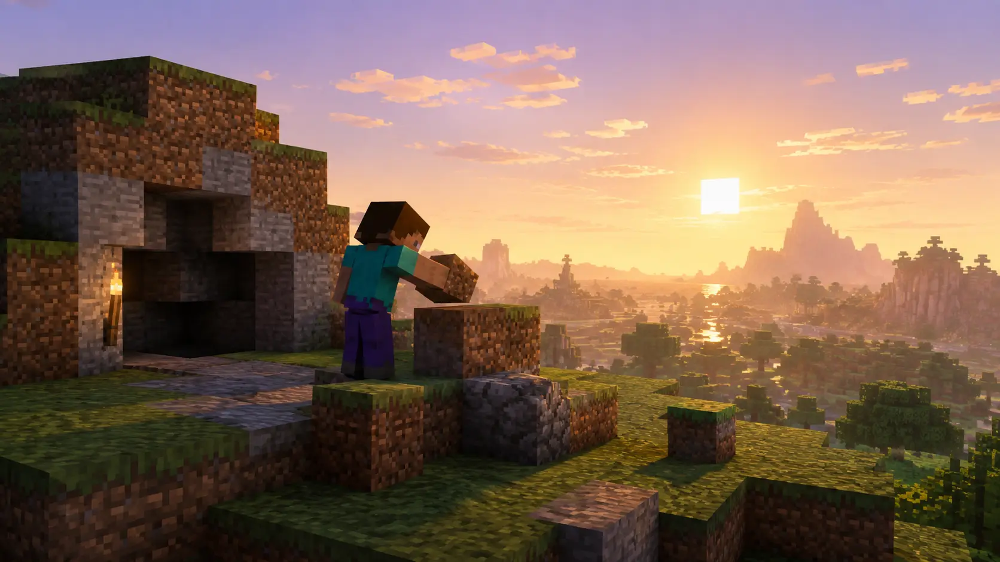
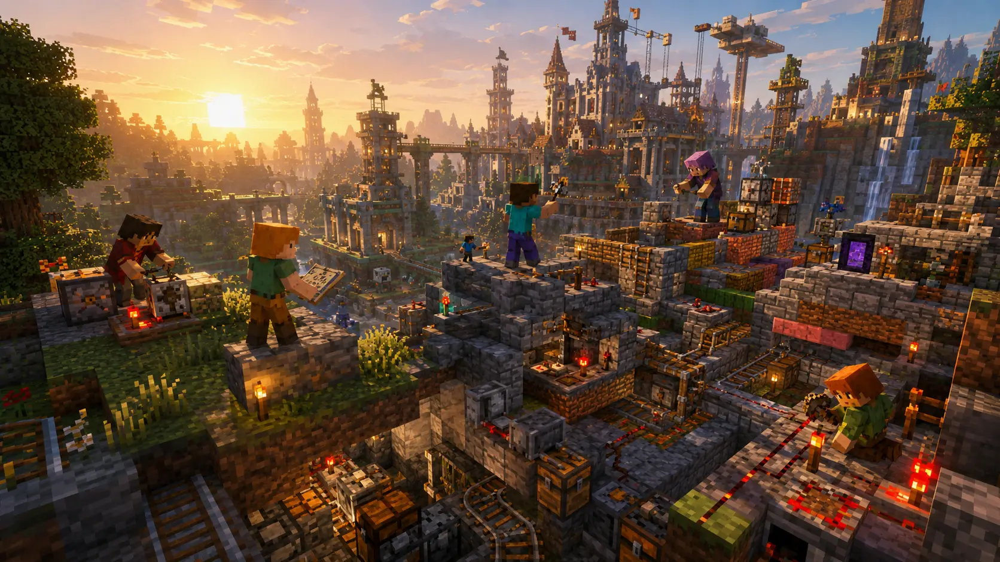
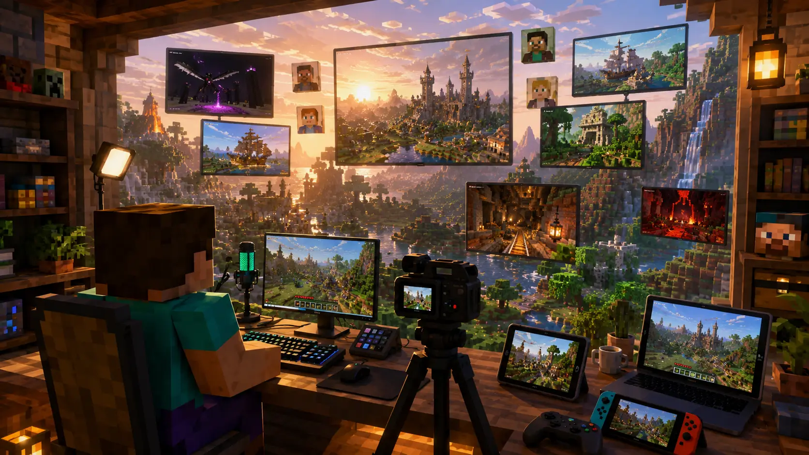
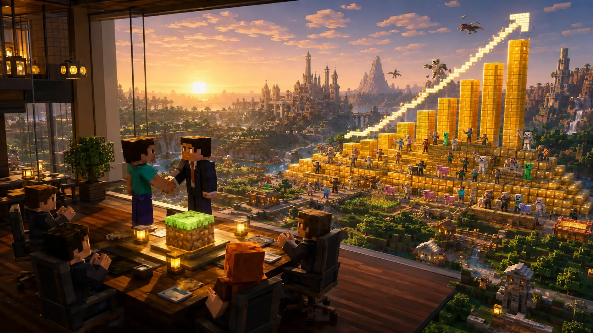
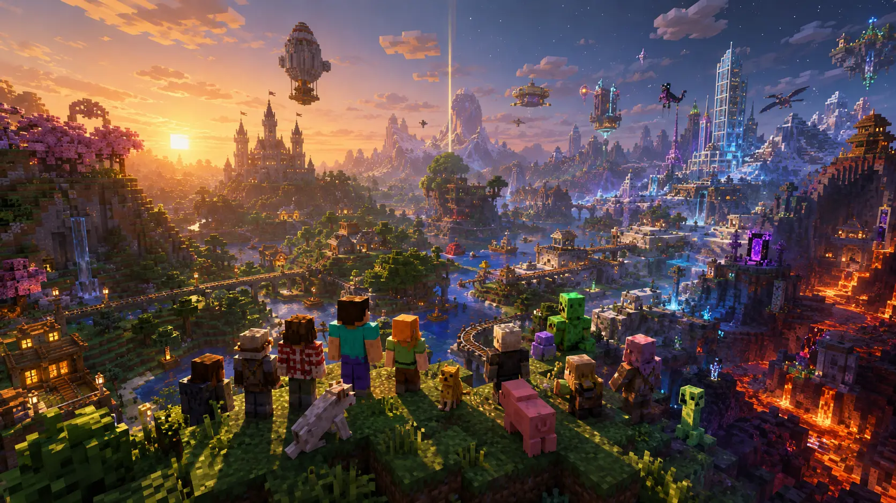

A World Made of Blocks
In May 2009, a remarkably simple-looking game appeared on the internet. Its world was made almost entirely of blocks. There was no cinematic opening, no enormous development team behind it, no carefully scripted campaign telling players where to go next, and certainly no indication that it was about to become one of the biggest entertainment phenomena ever created.
That early experiment would become Minecraft.
What made its rise so unlikely was not simply its modest beginning. Minecraft emerged during an era in which major video games were increasingly competing through realism, bigger budgets, elaborate stories, and spectacular graphics. Minecraft moved in almost the opposite direction. Its landscapes were deliberately blocky, its rules were easy to understand, and much of what happened inside the game was left to the imagination of the player.
That apparent simplicity hid an extraordinarily powerful idea: instead of constantly telling players what to do, Minecraft gave them a world and asked what they wanted to do with it.
Some explored. Some survived. Some built houses, castles, cities, computers, machines, or entire fantasy worlds. Others created multiplayer servers, modifications, adventure maps, videos, challenges, and communities that expanded Minecraft far beyond anything its original creator could have produced alone.
The numbers eventually became almost difficult to comprehend. More than fifteen years after the first public version appeared, Minecraft had sold over 350 million copies, making it the best-selling individual video game ever recorded by Guinness World Records.
But sales alone do not explain Minecraft.
The more interesting story is how a small independent experiment created by Swedish programmer Markus Persson evolved into a global platform for play and creativity, survived enormous changes in the gaming industry, became part of internet culture, entered classrooms around the world, and continued attracting new generations of players long after most games from 2009 had disappeared from everyday conversation.
To understand how Minecraft became the biggest-selling game of all time, we have to return to a much smaller beginning — when there was no Minecraft empire, no Microsoft acquisition, and barely even a game.
There was only an idea, a handful of blocks, and a project known as Cave Game.
The Idea That Became Minecraft
Minecraft did not begin as a fully formed vision of an endless world of blocks. Its foundations emerged gradually from ideas Markus “Notch” Persson had been experimenting with for years — particularly his fascination with games that behaved less like scripted experiences and more like systems in which players could shape what happened.
Persson had been programming since childhood and later spent more than four years working professionally on browser games at King.com. He also contributed to Wurm Online, an ambitious multiplayer game built around a persistent world that players could alter and influence. Years before Minecraft became famous, he was already interested in what he described as “working interactive worlds” rather than beautiful but largely static environments.
When he began experimenting with the ideas that would eventually become Minecraft, Persson was drawing inspiration from several very different games. He later described the concept as a mixture of Dwarf Fortress, RollerCoaster Tycoon and Dungeon Keeper, with accessibility as an important goal. Dwarf Fortress demonstrated how extraordinarily complex stories and systems could emerge from a simulated world. RollerCoaster Tycoon offered a more visual and approachable way of constructing and managing environments, while Dungeon Keeper helped inspire Persson's experiments with viewing and interacting with a world from a first-person perspective.
But the crucial piece arrived in 2009.
Persson encountered Infiniminer, an independent multiplayer game developed by Zachtronics in which players moved through a three-dimensional environment made from blocks, digging through the terrain in search of resources. Its original purpose was competitive, but its block-based world demonstrated something that immediately caught Persson's attention: low-resolution textures and simple geometric terrain could work remarkably well in first person.
The influence was not something Persson tried to hide. When he publicly introduced an early Minecraft build on the TIGSource forums on May 17, 2009, he explicitly identified Infiniminer as the game's main inspiration while explaining that he wanted the gameplay to develop in a direction closer to Dwarf Fortress. Years later, he continued to credit Infiniminer with pushing the project toward the first-person, hands-on form that Minecraft ultimately adopted.
That distinction matters. Minecraft was not simply Infiniminer with a different name. Persson took the immediacy of moving, digging and building inside a block-based world and combined it with ideas about survival, exploration, resource gathering, procedural environments and player freedom drawn from a much broader range of influences. What emerged was a design in which the blocks were not the purpose of the game — they were the tools through which almost anything else could happen.
In a sense, one of Minecraft's greatest strengths was already visible before Minecraft properly existed. Persson was not trying to dictate a single adventure. He was building a world governed by understandable systems and leaving enough space for players to decide what that world should become.
All that remained was to turn those ideas into something playable.
And in May 2009, that experiment began with a name almost nobody would remember: Cave Game.
Cave Game: The Beginning
On May 17, 2009, the experiment finally reached the public. Mojang now recognizes that date as Minecraft's birthday: the day the project still associated with the name Cave Game emerged into the world. What appeared was extraordinarily primitive compared with the game that would eventually follow, but its most important idea was already visible. Players could enter a three-dimensional world made from blocks, move through it, alter the terrain, and build directly inside the environment.
That same day, Markus Persson posted an early build on the TIGSource forums. The version was numbered 0.0.11a and could be launched through a Java applet in a web browser. Persson openly described Infiniminer as its main inspiration while explaining that he wanted the gameplay to evolve in a direction closer to Dwarf Fortress. There was still no polished survival experience, no enormous catalogue of blocks and creatures, and none of the elaborate systems that would later define Minecraft. This was a technical experiment being developed almost in public.
Yet something remarkable happened almost immediately.
Within minutes, people were responding to Persson's forum post. Within the first hour, players were already sharing screenshots of things they had constructed. Soon there were bridges, towers, castles and even simple pieces of pixel art. None of those creations were particularly impressive by modern Minecraft standards, but their significance was enormous: almost as soon as players were given a world they could reshape, they began using it to create things Persson had never explicitly instructed them to build.
The early discussion also revealed something that would become fundamental to Minecraft's development. Players were not simply testing a finished design; they were debating what the game should become. Should gathering materials take time? Should construction be completely free? Did the game need a goal? Persson participated in those conversations and was willing to change ideas that did not work. Minecraft was therefore growing alongside its earliest community rather than being developed entirely behind closed doors and revealed only when complete.
The game itself evolved at extraordinary speed. Features, mechanics and ideas were added, removed or reconsidered while players continued experimenting with each new version. The primitive project gradually became more recognizable, and the temporary identity surrounding Cave Game gave way to the name that would eventually become famous around the world: Minecraft. Years later, Mojang recreated the spirit of its 2009-era Minecraft Classic in a browser, complete with only 32 available blocks and many of the limitations and bugs of that early period — a striking reminder of how little was required for the central idea to work.
Looking back, the most extraordinary thing about Minecraft's beginning is not how much was already there.
It is how little it needed.
The graphics were crude. The systems were incomplete. The world was still an experiment. But players could already break it apart, rebuild it and show other people what they had made. The basic relationship that would eventually power Minecraft's global success — a simple set of tools placed in the hands of an imaginative community — had appeared almost immediately.
And that tiny experiment was about to grow much faster than anyone expected.

From a Small Experiment to an Indie Phenomenon
Minecraft's transformation from an obscure experiment into a commercial phenomenon did not happen after the game was finished. It happened while Markus Persson was still building it.
Throughout 2009 and 2010, Minecraft followed an unusual development model. Players could buy access to an unfinished game, play whatever version existed at the time, and then watch it change through frequent updates. New mechanics appeared, old ideas were revised, bugs were fixed, and the growing community discussed the game's direction while development continued. Rather than disappearing behind closed doors until launch day, Minecraft was effectively growing in front of its audience.
By June 30, 2010, the PC version had entered its Alpha phase. The game was becoming substantially more recognizable: survival mechanics were developing, multiplayer was expanding, redstone would soon introduce a primitive form of programmable circuitry, and the October Halloween Update brought major additions including biomes and the Nether. What had started as a simple building experiment was becoming a much deeper sandbox.
More importantly, people were paying for it.
As word spread through gaming forums, Reddit, YouTube and online communities, Minecraft's sales began accelerating far beyond Persson's original expectations. According to a contemporary account later published by Wired, Persson realized the project might be something much bigger when sales reached roughly 15,000 copies. By the summer of 2010, that figure had climbed to around 200,000. The flow of money became so unusual that PayPal temporarily froze his account because the activity appeared suspicious.
Minecraft was becoming too large to remain a one-man side project. During the summer of 2010, Persson joined forces with Jakob Porsér, a former colleague from King, and Carl Manneh, whom he knew from his time at the photo-sharing company jAlbum, to establish the company that became Mojang. What had begun with Persson writing code largely on his own was turning into an actual independent game studio built around a product that was growing faster than almost anyone had anticipated.
The next stage accelerated even further. Minecraft entered Beta on December 20, 2010. Less than a month later, on January 12, 2011, it passed one million copies sold. By April it had reached two million. By August, three million. Shortly before the first major MineCon event in November, Minecraft crossed four million sales.
And technically, Minecraft still had not been released.
That fact is one of the strangest and most revealing parts of its early history. In a traditional game-development cycle, millions of players might be expected to arrive after an enormous marketing campaign and a finished product reached stores. Minecraft had effectively reversed the process. Players were buying the unfinished game, recommending it to friends, producing videos and sharing creations while simultaneously helping generate the attention that fueled its continued growth.
On November 18, 2011, during MineCon in Las Vegas, Minecraft finally left Beta and reached its official 1.0 release. More than two years had passed since the first public version appeared in 2009, yet by launch day the game was already a multimillion-selling international success.
Minecraft had demonstrated something that would become increasingly important across the games industry: a project did not necessarily need a massive publisher, an enormous advertising campaign or even a finished version to build a devoted global audience. Continuous development, word of mouth and direct interaction with players could turn the development process itself into part of the experience.
But rapid growth alone cannot explain why millions of people stayed.
For that, we have to look at what Minecraft was offering that other games were not.
Why Minecraft Was Different
By the time Minecraft reached millions of players, the games industry was already filled with enormous worlds, sophisticated graphics and carefully designed adventures. Minecraft did not succeed because it simply did those things better. It offered something fundamentally different: a world whose most important stories were often not written by the developers at all.
At its core, Minecraft was remarkably easy to understand. The landscape was made from blocks. Players could break many of those blocks, collect resources and use them to make tools, structures and other objects. Yet from those simple actions emerged an enormous range of possibilities. A tree could become wood; wood could become tools or a shelter; a shelter could become a house, a castle or the beginning of an entire city. The same basic rules that allowed someone to survive their first night could eventually support projects involving hundreds or thousands of hours of work.
Minecraft also combined two ideas that produced very different experiences within the same basic world. Survival mode placed limits on the player: resources had to be gathered, health and hunger mattered, darkness brought hostile creatures, and exploration carried risk. Creative mode, by contrast, removed many of those restrictions by giving players immediate access to building materials and allowing them to concentrate almost entirely on construction and experimentation. Markus Persson explained as early as 2010 that players had enjoyed Minecraft's earliest versions even before they contained conventional gameplay, which led him to preserve that unrestricted building experience as Creative mode.
That combination was crucial. Minecraft could be a survival game, a construction game, an exploration game or simply a digital space in which someone experimented with ideas. The developers provided systems and challenges, but players were rarely forced to follow one predetermined route through them. Mojang still describes the fundamental choice in almost the same terms today: players can survive the night or build something entirely of their own invention.
The world itself reinforced that freedom. Minecraft uses procedural generation, meaning that terrain and many structures are created according to rules and algorithms rather than every landscape being manually designed in advance. As players travel, they encounter combinations of mountains, forests, caves, oceans, villages and other environments that make exploration unpredictable. A new world is therefore not merely a reset of the same carefully scripted map; it can become the starting point for a different experience. Mojang has explicitly described procedural generation as the method used to create Minecraft's worlds and many of the structures within them.
There was another important contradiction at the heart of the design. Minecraft looked simple, but it was not necessarily shallow.
Its block-based appearance meant that the basic vocabulary of the world could be understood almost immediately. A player did not need to learn hundreds of complicated controls before placing the first block. But the consequences of combining those blocks, resources and game systems could become extraordinarily complex. A beginner might spend an evening building a wooden house. Another player could eventually construct a vast fortress, automate resource production, explore distant dimensions or create elaborate mechanisms. Minecraft did not require every player to pursue that complexity, but it allowed complexity to emerge for those who wanted it.
Perhaps most importantly, Minecraft gave players unusually strong ownership over what counted as success. Defeating enemies and progressing through the game's systems were possible, but they were not the only reasons to play. Finishing a building, discovering a rare location, surviving an expedition, creating a personal challenge or simply improving a familiar world could all become meaningful objectives because the player had chosen them.
That helps explain why Minecraft could appeal to people with radically different expectations. For one person, the tension of surviving the first night might be the game. For another, survival was merely the process of gathering materials for a construction project. For someone else, Minecraft could become an endless world to explore.
The game provided the rules.
The player provided much of the purpose.
And once millions of players were given that freedom, they began doing something even more important: they started expanding Minecraft far beyond what Mojang could create on its own.
The Players Became Part of the Game
Minecraft gave players freedom inside its world. The community soon discovered that it could go much further: it could change what that world was capable of doing.
As Minecraft's audience expanded, multiplayer servers became much more than places where several people could occupy the same map. Server owners created their own rules, economies, challenges, competitive modes and social communities. A player could join one server focused almost entirely on survival and cooperation, another built around enormous construction projects, and another offering an experience that barely resembled ordinary Minecraft. That diversity remains central to the game today; Mojang describes community servers as large online worlds created by players, each capable of offering its own distinctive experience.
Custom maps pushed the idea even further. Players began constructing worlds specifically for other people to experience, turning Minecraft's building tools into a primitive form of game design. Instead of merely creating a castle to admire, someone could create an adventure inside it. Maps could contain puzzles, obstacle courses, stories, survival challenges or entirely new objectives. Minecraft was increasingly becoming not only a game people played, but also a set of tools with which they could make experiences for other players.
Then there were mods.
Particularly around Java Edition, programmers and hobbyists learned to modify Minecraft and introduce content that did not exist in the original game. Mods could add new creatures, machinery, resources, dimensions, interfaces and completely different progression systems. Some changed a few details; others transformed Minecraft so extensively that playing a heavily modified installation could feel like playing another game built on top of it. Modding became sufficiently important that Mojang itself would eventually describe it as being at the heart of Java Edition, while Minecraft's current licensing rules explicitly recognize original mods created by players.
Research into the Minecraft modding ecosystem has likewise found an unusually active creator culture. A 2021 academic study examining more than 2,200 Minecraft mods on CurseForge described Minecraft as one of the most notable examples of a game with a highly active and successful modding community. The significance of that ecosystem was not simply the amount of additional content it produced. Mods gave players reasons to return to Minecraft after they had already explored the official game, while allowing different communities to reshape it around their own interests.
But players did not always need to modify Minecraft's code to discover possibilities Mojang had never explicitly designed for them.
Redstone became perhaps the most extraordinary example. Introduced in July 2010 alongside elements such as buttons, pressure plates and doors, redstone behaves loosely like an electrical system, allowing players to connect components and construct mechanisms. What began as another game mechanic quickly became a tool for engineering. Players created automatic doors, traps, farms, combination locks, calculators and increasingly complicated machines.
Within only a few months, the community had already pushed it somewhere unexpected. Mojang later recalled that one of the first Minecraft computers appeared in September 2010, capable of performing mathematical and logical operations. It was primitive compared with later creations, but even Persson was impressed. Redstone had demonstrated something fundamental about Minecraft: sufficiently flexible systems could produce results that the developers had not necessarily intended when those systems were created.
The same principle appeared in ordinary construction. Because Minecraft's blocks acted like a three-dimensional vocabulary, players could use them to reproduce almost anything at an appropriate scale: real buildings, fictional locations, monuments, cities, landscapes and enormous collaborative projects. The achievement was not simply that Minecraft allowed impressive structures to exist. It was that every ambitious creation became evidence for the next player of what might be possible.
This created a powerful cycle.
Mojang expanded Minecraft. Players experimented with those additions. Some transformed them into unexpected inventions or entirely new ways of playing. Other players saw those creations and attempted something even more ambitious. Servers, mods, maps and technical builds continually generated experiences that no development team could realistically have produced alone.
Eventually, that relationship became formal enough that community-created content could exist within Minecraft's official ecosystem as well. Mojang's current creator and partner programs allow creators to make and distribute experiences including maps, skins, textures and add-ons, while Bedrock tools can alter mobs, blocks, items and other aspects of a Minecraft world.
Minecraft therefore developed an unusual advantage: its players could continuously create reasons for other players to keep playing.
But creating extraordinary things was only part of the phenomenon.
People also wanted to show them to the world.
And at almost exactly the right moment, a rapidly growing video platform gave Minecraft's community the perfect place to do it.

Minecraft and the YouTube Explosion
Minecraft was already growing rapidly through forums, word of mouth and its expanding community, but another platform gave that growth an entirely new dimension.
YouTube turned Minecraft into something people could experience even when they were not playing it.
The relationship began almost immediately. According to YouTube's own retrospective on Minecraft's history, videos of the game were appearing on the platform as early as 2009. At first, much of the content was straightforward: players demonstrated buildings, discoveries or things they had learned to do. But Minecraft was unusually well suited to producing videos because no two sessions had to tell the same story. A creator could build something extraordinary, attempt to survive under unusual conditions, explore with friends, teach a complicated mechanic or simply record the unpredictable events of an ordinary world.
As the game evolved, those possibilities multiplied. Let's Plays allowed viewers to follow the same Minecraft world across dozens or even hundreds of episodes. Tutorials taught millions of people how to craft, build or use redstone. Adventure maps created ready-made stories. Multiplayer servers produced friendships, rivalries and spontaneous comedy. Mods supplied creators with new material, while challenges, speedruns, role-playing, animations and music videos pushed Minecraft content far beyond conventional gameplay footage.
YouTube's own history of the phenomenon highlights long-running series such as Shadow of Israphel, Stampy's Lovely World and Etho's technical Let's Play, followed in later years by collaborative survival servers and formats such as hardcore challenges and “100 Days” videos. The specific trends changed, but Minecraft proved unusually capable of adapting to whatever style of video creators wanted to make next.
That adaptability produced a powerful feedback loop.
A player could discover an impressive Minecraft creation on YouTube and decide to try the game. They might then learn techniques from tutorials, reproduce an idea in their own world and eventually upload something of their own. Other viewers could see that creation and repeat the process. In this way, Minecraft videos did more than advertise the game: they continually demonstrated new reasons to play it.
This distinction helps explain why the relationship endured for so long. A traditional story-driven game may generate enormous attention around its release, but once viewers have seen its major scenes and players have completed its central campaign, the range of new material can narrow. Minecraft had no comparable limit. Every new world, update, server, mod, challenge or invention could become the starting point for another story.
That does not mean YouTube alone explains Minecraft's success. The game was already attracting paying players before video creators became one of its defining cultural forces, and many other factors contributed to its expansion. But the two ecosystems complemented each other unusually well: Minecraft supplied creators with an almost inexhaustible stage, while creators continually showed new audiences what could be done on that stage. YouTube itself later described Minecraft in the hands of creators as a boundless environment for storytelling whose development became deeply intertwined with the platform.
The scale eventually became historic.
In December 2021, Minecraft-related content reached one trillion views on YouTube. Mojang marked the milestone by crediting the community not only for watching those videos but for producing the enormous variety behind them — builds, tutorials, survival multiplayer moments, speedruns, walkthroughs, mods, theories, music videos and countless other formats.
And the growth continued. By Minecraft's fifteenth anniversary in May 2024, YouTube reported that content related to the game had accumulated more than 1.5 trillion views. The platform described Minecraft as a generational phenomenon whose creator culture stretched from some of YouTube's earliest gaming videos to modern Shorts, multiplayer storytelling and entirely new formats invented years after the game's debut.
Few statistics illustrate Minecraft's cultural reach better. Hundreds of millions of copies had placed the game on devices around the world, but more than a trillion video views meant that Minecraft also existed far beyond those installations — as entertainment, tutorials, stories, memes and a shared visual language recognizable even to people who had never built a house or mined a diamond themselves.
YouTube helped Minecraft escape the boundaries of the game screen.
The next step was for Minecraft to escape the boundaries of the PC.
From PC Game to Global Platform
Minecraft may have been born on computers, but becoming the best-selling video game of all time required something much bigger: it had to stop belonging primarily to PC players.
That transformation began surprisingly early.
In 2011, the same year Minecraft reached its official 1.0 release on PC, Mojang began taking the game into people's pockets. Minecraft: Pocket Edition first appeared on Android through Sony Ericsson's Xperia Play before expanding to other Android and iOS devices. The early mobile version was extremely limited compared with its PC counterpart. Mojang later described it as little more than an experiment assembled in only three months, containing only the most basic elements needed to make something recognizably Minecraft.
But its importance was much greater than its feature list.
Minecraft no longer required someone to sit at a computer. A world could now exist on a device that millions of people already carried with them. Mobile gaming also opened Minecraft to audiences who might never have considered themselves traditional PC gamers, while the touch-screen format made the game's fundamental actions — moving, breaking blocks, placing blocks and exploring — adaptable to an entirely different kind of hardware.
Then came the living room.
On May 9, 2012, Minecraft: Xbox 360 Edition, developed with 4J Studios, launched through Xbox Live Arcade. The response was immediate. Microsoft reported the following day that the game had broken the platform's previous digital sales records for a title's first 24 hours, with more than 400,000 players already appearing on its leaderboards.
It was not a brief burst of enthusiasm. By April 2014, the Xbox 360 version alone had sold more than 12 million copies. Microsoft would later describe that 2012 release as the foundation for Minecraft's future away from PC, as versions subsequently appeared across generations of Xbox, PlayStation and Nintendo hardware.
That expansion changed the scale of Minecraft's potential audience.
A PC player could use a keyboard and mouse. A child could play on a tablet. Friends or family members could share a television and play together on a console. Over the following years, Minecraft appeared across an unusually broad collection of devices, adapting the same central idea — explore, survive and build — to very different ways of playing.
But spreading Minecraft across so many platforms created a new problem.
For years, the game existed as several related but technically distinct editions. The original Java Edition remained closely associated with PC and its long-established modding culture, while the codebase that grew from Pocket Edition expanded across mobile devices, Windows and eventually consoles. Different versions could have different features and, critically, players on one platform could not always simply join friends using another.
Mojang and Microsoft eventually tried to reduce those barriers.
In September 2017, the Better Together Update began unifying Xbox One, mobile, VR and Windows 10 around what Mojang called its Bedrock Engine. One of its most important features was cross-platform multiplayer: players using different supported devices could inhabit the same Minecraft worlds instead of being separated primarily by the hardware they owned. Nintendo Switch later joined that Bedrock ecosystem with a new version released in 2018.
The distinction between Java Edition and Bedrock Edition never disappeared entirely. They remain separate versions with important differences, particularly in areas such as modding and technical behavior. But Bedrock provided Minecraft with something extraordinarily valuable for a game built around shared worlds: a much more unified ecosystem across consoles, phones, tablets and Windows PCs. Mojang's current documentation describes cross-play between supported Bedrock platforms, while Java continues as its own PC-focused edition.
Minecraft continued following players into newer hardware generations rather than becoming stranded on the machines that made it famous. A native PlayStation 5 edition, for example, launched on October 22, 2024, more than fifteen years after Cave Game first appeared. Minecraft today remains available across Windows, Mac, Linux, Xbox systems, PlayStation, Nintendo Switch, Android, iOS and other supported devices.
That reach matters when trying to understand Minecraft's eventual sales record.
A game tied permanently to one machine or one generation must repeatedly convince people to preserve access to that ecosystem. Minecraft gradually did the opposite. It followed players from computers to phones, from one console generation to another and into devices that had not even existed when the game was created. A person introduced to Minecraft on a family tablet could later play it on a console; someone who discovered it on Xbox could encounter friends using another supported platform.
Minecraft was no longer merely a successful PC game that had been ported elsewhere.
It was becoming a platform-independent idea: the same recognizable world of blocks available almost wherever people wanted to play.
And just as Minecraft was establishing itself across those devices, an even larger transformation was approaching.
In 2014, one of the world's biggest technology companies decided that Mojang — and the game it had created — was worth $2.5 billion.
Microsoft's $2.5 Billion Bet
By 2014, Minecraft no longer resembled the small independent experiment Markus Persson had released five years earlier. It was a global phenomenon spread across computers, consoles and mobile devices, supported by an enormous community and already established as one of the most important games of its generation.
But the person who had started it increasingly wanted to step away.
Persson had already stopped serving as Minecraft's lead developer years earlier, handing primary responsibility for the game to Jens Bergensten. Yet as Minecraft grew, Persson remained inseparable from it in the public imagination. He had become not merely the creator of a successful video game but a symbol of Minecraft, Mojang and, to some extent, the independent game-development movement that the project had come to represent.
The scale of that responsibility was not something he had originally sought.
In June 2014, Persson posted a remarkable message on Twitter asking whether anyone wanted to buy his share of Mojang so he could “move on with my life.” The comment may have sounded casual, but it reflected a much deeper frustration. When the eventual sale was announced, Persson explained that he did not see himself as an entrepreneur or chief executive and had become uncomfortable with being treated as the public representative of something that had grown far beyond him. He wanted to return to smaller programming projects rather than remain responsible for the expectations surrounding Minecraft.
One of the companies interested in taking Minecraft to its next stage was Microsoft.
On September 15, 2014, Microsoft announced an agreement to acquire Mojang for $2.5 billion. At the time, Microsoft described Minecraft as one of the most popular video game franchises in history and emphasized something important about its strategy: Minecraft's community extended far beyond Xbox and Windows. The company said it intended to continue making the game available across platforms including PC, iOS, Android, PlayStation and Xbox rather than turning Minecraft into an Xbox-exclusive property.
That commitment mattered.
For many players, Microsoft ownership raised an obvious concern. Minecraft had grown through an unusually open relationship with its community and was already thriving on competing platforms. If Microsoft attempted to lock the franchise inside its own ecosystem, it risked damaging one of Minecraft's greatest strengths: its ability to exist almost everywhere.
Instead, Microsoft treated that reach as part of what it was buying.
The company's 2015 annual report described the acquisition as strengthening Microsoft's gaming portfolio not only across Windows and Xbox but also across other ecosystems besides its own. Microsoft later pointed to Minecraft as an example of its willingness to keep major gaming properties available across competing platforms, noting that the game continued expanding to additional devices after Mojang joined the company.
The deal officially closed on November 6, 2014. Microsoft recorded the acquisition of Mojang Synergies AB for $2.5 billion in cash, net of cash acquired. Persson, Jakob Porsér and Carl Manneh — the three founders associated with Mojang's rise — left the company as part of the transition.
For Persson, it was the end of his direct involvement with the phenomenon he had created.
For Minecraft, it was the beginning of a very different era.
Microsoft had not merely purchased a successful game. It had acquired Mojang and the Minecraft franchise, along with access to an extraordinary global community that had already demonstrated an ability to keep the game culturally relevant long after its original release. Microsoft's own financial reporting explicitly identified Minecraft and its community as valuable additions to a gaming portfolio that extended across multiple ecosystems.
The price therefore looks less mysterious when viewed from that perspective.
Minecraft was already generating value in several directions at once. It sold games on numerous platforms. It had an enormous multiplayer community. It dominated online video. It appealed to children and adults. Its underlying format could support new content almost indefinitely, and unlike many blockbuster releases, it was not tied to a story that players could simply finish and leave behind.
Microsoft was effectively betting that Minecraft was not approaching the end of its extraordinary run.
It was still near the beginning.
The years that followed supported that idea. Minecraft remained available on rival hardware, expanded its cross-platform infrastructure and continued receiving major updates. Mojang itself remained the studio responsible for developing the Minecraft universe, eventually adopting the name Mojang Studios in 2020 while operating as part of Microsoft's gaming organization.
The franchise also expanded beyond the original game. New Minecraft projects, merchandise, educational applications and other forms of entertainment gradually transformed the name into something broader than the Java game Persson had started in 2009.
Yet perhaps the most important thing Microsoft did was not replace Minecraft's central idea.
The familiar loop remained intact: enter a world, explore it, survive in it, alter it and build something of your own. New owners, platforms and business structures accumulated around Minecraft, but the fundamental experience that had attracted its earliest players remained recognizable.
That continuity was crucial because the $2.5 billion acquisition did not mark Minecraft's commercial peak.
Far from it.
When Microsoft bought Mojang in 2014, Minecraft had already become one of the most successful games ever created. Over the following decade, however, its sales would climb to a level no other individual video game had officially reached.
The small project once known as Cave Game was about to become the best-selling video game of all time.

How Minecraft Became the Best-Selling Game of All Time
Minecraft's sales record did not come from one spectacular launch.
It was built gradually, across years, platforms and generations of players.
That distinction is crucial. Most blockbuster games concentrate a large percentage of their commercial impact around release, when advertising, reviews and anticipation are at their peak. Minecraft followed almost the opposite trajectory. It began selling while unfinished, continued expanding after its official 2011 release, moved onto new devices, attracted new audiences and kept receiving substantial updates long after many games released alongside it had disappeared from the charts.
The first million arrived remarkably early. Minecraft crossed that threshold in January 2011, while it was still in Beta and approximately ten months before its official 1.0 release. By the time the completed version launched that November, millions of people had already paid for the game. Minecraft had effectively begun its commercial life before traditional launch day even arrived.
But the numbers that followed were on an entirely different scale.
By 2016, Minecraft had passed 100 million copies sold worldwide. Microsoft reported more than 106 million sales during that fiscal year, while Xbox's retrospective on the game's history notes that around the 100-million milestone, an average of approximately 53,000 copies were being purchased every day. Minecraft was already seven years removed from its first public build, yet people were still buying it at a rate that many newly released games would envy.
Its availability across different devices was one obvious part of the explanation. The game was no longer dependent on its original PC audience. Console editions, mobile versions and the later Bedrock ecosystem gave Minecraft access to enormous groups of players with very different habits and hardware. Instead of remaining tied to the platform on which it had been created, Minecraft repeatedly followed its audience onto new ones. Xbox itself describes the 2012 Xbox 360 version as the foundation of Minecraft's future beyond PC, eventually leading to releases across successive Xbox, PlayStation and Nintendo systems.
But availability alone cannot explain the record.
Minecraft also avoided becoming frozen in the year it was released. Mojang continually altered and expanded the world through major updates. New biomes, creatures, blocks, structures, mechanics and entire changes to world generation repeatedly gave existing players reasons to return while making the game feel current to people encountering it for the first time. Xbox's fifteen-year history of Minecraft documents this continual evolution, from early multiplayer and crafting to Redstone, the Nether's expansion, Caves & Cliffs, The Wild Update and many other substantial additions.
That created an unusual commercial cycle.
A child discovering Minecraft in 2023 was not necessarily buying a game that felt thirteen years old. They were entering a world still being actively developed, surrounded by current videos, servers, creators and other players. At the same time, someone who had first played in 2011 could return and find systems, landscapes and content that had not existed when they left.
Minecraft therefore accumulated generations rather than simply replacing one audience with another.
Its structure helped make that possible. There was no central campaign whose ending made the experience obsolete once players knew the story. Starting a new world could still create a different landscape and a different set of objectives. Creative players could begin another enormous build. Friends could start a multiplayer server. Updates could give veterans unexplored material without requiring Mojang to replace Minecraft with “Minecraft 2.”
That last point may be one of the most important.
Many successful video game franchises maintain their commercial relevance by releasing sequels. Minecraft largely maintained the relevance of Minecraft itself. The original game kept evolving while Mojang experimented with separate spin-offs around it. The product at the center of the phenomenon remained recognizable as the same Minecraft whose full version had launched in 2011.
The accumulated effect became extraordinary.
At Minecraft Live on October 15, 2023, Mojang announced that Minecraft had surpassed 300 million copies sold. Guinness World Records notes that it was the first video game to reach that sales milestone.
And it did not stop there.
The latest figure currently published by Guinness World Records places Minecraft at more than 350 million units sold, based on figures confirmed by Mojang and listed for April 2025. Guinness formally recognizes it as the best-selling video game of all time.
That number becomes even more remarkable when placed beside the game's origins. The project that Persson began experimenting with in 2009 had gone from players responding to a primitive browser build on an internet forum to hundreds of millions of purchases around the world.
There is, however, an apparent contradiction worth explaining.
The Tetris Company states that more than 520 million Tetris units have been sold worldwide — a number considerably higher than Minecraft's 350 million. Yet Guinness still gives Minecraft the record for the best-selling video game.
The difference comes from what is being counted.
Tetris has existed since 1984 through a very large number of separately developed and licensed versions released by different publishers across many platforms. The Tetris Company's figure describes sales associated with the Tetris brand across those releases. Minecraft's record, by contrast, treats Minecraft as one continuously developed multi-platform game. The two statistics therefore use different definitions, which explains how the Tetris brand can report more than 520 million units while Guinness simultaneously recognizes Minecraft as the best-selling individual video game. This is a classification distinction rather than evidence that either organization must be reporting an incorrect number.
Minecraft's record is therefore not simply the story of selling 350 million copies.
It is the result of several forces reinforcing one another for more than fifteen years: an unusually accessible concept, enormous creative freedom, continuous development, community-generated content, YouTube exposure, multiplayer, expansion across hardware generations and an ability to attract children who were not even born when the original game appeared.
Each new player also entered a world populated by the work of everyone who had come before them — tutorials, servers, maps, mods, videos, builds and knowledge accumulated across more than a decade.
Minecraft did not reach the top because everyone bought it at once.
It reached the top because people never really stopped buying it.
And by the time it had become the best-selling game in history, Minecraft was no longer important only because of what happened inside the game.
Its blocks had begun appearing in classrooms, toys, books, merchandise, movies and popular culture around the world.
Minecraft had become something larger than a video game.
More Than a Video Game
Selling hundreds of millions of copies established Minecraft as a commercial phenomenon. But sales tell only part of the story.
Over time, Minecraft's distinctive blocks, creatures and visual language began appearing far beyond the worlds in which players originally mined and built. The same flexibility that allowed the game to function as survival adventure, construction tool and social space also made it unusually adaptable to purposes that had little to do with conventional gaming.
One of the clearest examples appeared in the classroom.
Educators had already been experimenting with Minecraft as a teaching tool before Microsoft and Mojang launched Minecraft: Education Edition in 2016. The specialized version was designed around classroom use, adding tools and resources intended to support creativity, collaboration and problem-solving while allowing teachers to incorporate Minecraft into structured lessons.
What students could learn through it was surprisingly broad.
Minecraft Education now provides lesson material covering subjects including mathematics, science, computer science, language arts and social studies. Coding resources allow students to work with concepts such as conditionals, functions and coordinates using block-based programming and JavaScript, while other educational worlds and activities have been used to explore subjects ranging from chemistry and sustainability to history and digital citizenship.
The scale eventually became substantial. Minecraft Education currently states that more than 40,000 school systems across 140 countries use the platform to support educational goals.
That expansion revealed something important about Minecraft's underlying design. A normal video game can certainly be used creatively, but Minecraft offered teachers something closer to a shared digital environment. Students could construct models, solve problems together, recreate places, test ideas and demonstrate understanding through what they built rather than simply answering questions on a screen.
Education was only one direction in which the Minecraft name expanded.
The franchise also began experimenting with entirely different kinds of games. Minecraft Dungeons, released in 2020, transformed Minecraft's familiar world into an action-oriented dungeon crawler rather than attempting to reproduce the original sandbox. By September 2023, Mojang reported that the game had surpassed 25 million unique players. Minecraft Legends later pushed the universe into action-strategy, demonstrating that Minecraft's creatures, environments and recognizable visual style could support experiences built around completely different mechanics.
The world of Minecraft also made an unusually natural transition into physical construction.
LEGO Minecraft transformed the game's digital blocks into actual building pieces, allowing players to recreate locations, creatures and structures outside a screen. The connection was almost obvious: both systems were based around combining simple units into something limited largely by the builder's imagination. Years after the collaboration began, LEGO continues producing dedicated Minecraft sets for children and adult fans alike.
Books, toys, clothing and other licensed products followed the same pattern, carrying Creepers, pickaxes, blocky landscapes and familiar characters into everyday popular culture. Minecraft's visual identity was particularly effective in this respect because it was immediately recognizable. A Creeper did not need photorealistic detail to be identifiable. A grass block could represent an entire game.
Eventually, Minecraft reached one of the most traditional symbols of mainstream entertainment success: the cinema.
A Minecraft Movie reached theaters on April 4, 2025, transforming Mojang's largely player-driven universe into a live-action feature film. That transition presented an unusual challenge because Minecraft had never depended on one definitive protagonist or one canonical adventure. The original game's appeal came precisely from allowing players to create their own stories. Turning that freedom into a conventional movie demonstrated just how far the Minecraft identity had travelled beyond the software released in 2009.
Yet Minecraft's expansion beyond gaming worked because most of these extensions relied on something already present in the original.
Education used its freedom to build and experiment.
LEGO translated virtual construction into physical construction.
Spin-off games reused a world and characters that millions of people already recognized.
The movie transformed a shared visual universe into a different kind of storytelling.
Minecraft therefore became more than a successful video game without needing to abandon what made it recognizable in the first place.
Its greatest cultural asset was not a complicated plot or a single famous hero.
It was a world simple enough to recognize instantly and flexible enough to be continually reimagined.
By this point, Minecraft had survived changes in ownership, platforms, technology and entire generations of players. It had become a game, a creative tool, an educational environment and an entertainment franchise.
That raises another remarkable question.
Most games from 2009 are remembered as products of their time.
Why does Minecraft still feel alive?
Why Minecraft Refuses to Disappear
Most successful video games eventually face the same problem: time.
Technology changes. Players move on. New consoles arrive. Graphics that once looked spectacular begin to feel dated, online communities shrink, and franchises often depend on sequels to bring their audiences back.
Minecraft has followed a remarkably different path.
More than fifteen years after Cave Game first appeared in 2009, the original Minecraft is still being actively developed. Mojang has repeatedly expanded its worlds with new creatures, environments, blocks, mechanics and technical improvements rather than abandoning the game in favor of a conventional numbered sequel. In 2024, the studio went even further by changing its development rhythm: instead of concentrating most new content into one major summer update, Minecraft would begin receiving multiple free “game drops” throughout the year.
That strategy continues to keep the same game moving forward. In 2025, Mojang released drops such as Spring to Life and Chase the Skies, while Minecraft Live in March 2026 was still presenting additional content planned for the game. Minecraft is therefore not surviving merely because people continue playing an old product. The product itself is still changing.
Continuous development, however, explains only part of its longevity.
Minecraft has another advantage that many games do not: its basic idea ages unusually well.
Its block-based appearance was never designed to imitate reality. Even in 2009, Minecraft looked deliberately abstract beside games pursuing increasingly detailed character models, lighting and environments. That means its visual identity does not depend entirely on remaining at the technological frontier. A grass block, a Creeper or a diamond pickaxe can still look unmistakably like Minecraft even as hardware becomes dramatically more powerful.
This does not make Minecraft immune to technical evolution. Mojang has continued improving how the game looks and performs, including major visual work such as Vibrant Visuals for Bedrock Edition. But those improvements can exist around the recognizable block-based language rather than replacing it.
The structure of the game is equally resistant to aging.
A traditional adventure may be remembered for a specific story, level or ending. Once players know those elements, returning can mean replaying something familiar. Minecraft's procedural worlds and player-defined goals create a different situation. A new world can produce a new landscape. A new group of friends can create a different multiplayer experience. A builder can begin another project, a technical player can experiment with another machine, and an update can introduce new materials or mechanics into systems that already existed.
Minecraft does not need to provide every story because its players continually generate their own.
That makes the community one of the most important parts of its longevity. Servers, maps, mods, add-ons, tutorials, challenges, technical discoveries and videos ensure that the amount of Minecraft content available to a player is vastly larger than what Mojang creates directly. Mojang's Marketplace ecosystem continues adding community-made Bedrock content, while Java Edition retains the extensive modding culture that developed around the game long before Microsoft acquired Mojang.
The result is an unusual division of labor.
Mojang can update Minecraft, but the community continually reinterprets it.
A new block is not simply a new block. Builders may turn it into architectural details. Redstone players may discover technical uses for associated mechanics. Map creators can incorporate it into custom experiences. Server owners can build activities around it. YouTubers and streamers can turn those discoveries into entertainment for millions of viewers.
Every addition can therefore produce consequences far beyond the feature itself.
Minecraft also benefited from growing across generations rather than belonging exclusively to one.
Someone who discovered the game on a PC in 2011 may now be an adult. Another player may have first encountered it on an Xbox 360, a tablet or through a YouTube creator. Children discovering Minecraft today are entering the same basic universe, but surrounded by more than fifteen years of accumulated knowledge, creations and cultural references.
That creates something rare in gaming: older and younger players can recognize the same game without necessarily having experienced the same version of it.
Its enormous platform reach reinforces that continuity. Minecraft moved from computers to phones, tablets and successive generations of consoles instead of remaining trapped on the hardware of its original era. Cross-platform Bedrock play later reduced many of those boundaries further, making hardware less important to the identity of the experience.
And then there is the sequel Minecraft never needed.
There have been spin-offs, including Minecraft Dungeons and Minecraft Legends, but Mojang has never replaced the central sandbox with a numbered Minecraft 2. Instead, the original game has effectively absorbed years of development into itself. The Minecraft purchased by a new player today descends directly from the same evolving project that reached version 1.0 in 2011.
That continuity matters.
A sequel can rejuvenate a franchise, but it can also split communities, abandon old worlds and make previous versions feel obsolete. Minecraft's approach has allowed enormous amounts of accumulated player knowledge, infrastructure and culture to remain relevant while the game itself continues evolving.
None of these factors alone can prove why Minecraft has remained successful for so long. Player preferences are too complex for one definitive explanation. But together they reveal an unusually durable structure: a recognizable visual identity, simple fundamental rules, enormous creative depth, procedural worlds, active development, broad platform availability and a community capable of continuously inventing new reasons to return.
Minecraft survived because it did not remain exactly the same.
But it also survived because it never stopped being recognizably Minecraft.
That balance may be one of its greatest achievements.
In 2009, Markus Persson created a world in which players could break blocks and put them somewhere else. Everything that followed — hundreds of millions of sales, vast online communities, classrooms, videos, servers, mods and an international entertainment franchise — grew around that extraordinarily simple foundation.
Which leaves one final question.
Beyond the records and the billions of hours spent building, what did Minecraft actually change about video games?

The Legacy of Minecraft
Minecraft did not invent open worlds, procedural generation, survival games, modding or player-created content.
Its legacy comes from something more difficult to define: it brought many of those ideas together in a form simple enough for almost anyone to understand and flexible enough for players to keep expanding for years.
When Minecraft appeared in 2009, much of the blockbuster video game industry was moving toward larger budgets, more realistic graphics and increasingly cinematic experiences. Minecraft demonstrated that another path could succeed on an enormous scale. Its visual language was deliberately simple, its original development team was tiny, and much of the experience depended not on scripted spectacle but on systems, experimentation and imagination.
That contrast became part of its historical significance. When Minecraft was inducted into the World Video Game Hall of Fame in 2020, The Strong National Museum of Play emphasized that the game allowed players to create their own objectives rather than concentrating primarily on scores or predetermined tasks. The museum described Minecraft as a hybrid between a game and a construction toy — an experience in which players became makers rather than merely participants in someone else's adventure.
That idea helped blur an increasingly important boundary in games: the distinction between player and creator.
Minecraft players could consume what Mojang designed, but they could also produce something themselves. A survival world could become a personal story. A collection of blocks could become a city. Redstone could become engineering. A server could become its own community and ruleset. A mod could fundamentally transform how the game worked. A custom map could turn one player's creation into another player's adventure.
Minecraft was not the first game to support user-generated creativity, but it became one of the clearest demonstrations of how powerful that model could become. Research into digital sandbox environments places Minecraft alongside platforms in which sophisticated creative tools allow users not only to consume content but to produce and share it within a broader ecosystem.
Its development history also became symbolic of the possibilities available to independent creators.
Minecraft began with Markus Persson developing an experimental project and communicating directly with a small online audience. It grew through paid access while still unfinished, rapid updates, word of mouth and community participation rather than beginning with the resources of a traditional blockbuster publisher. Contemporary accounts of its early rise documented how quickly that small project became a commercial phenomenon and eventually required the creation of Mojang around it.
Minecraft certainly did not create the modern independent games industry. But its extraordinary success made it impossible to ignore the possibility that a small development project with a distinctive idea could compete culturally — and eventually commercially — with some of the largest productions in gaming.
Its relationship with online creators left another lasting mark.
Minecraft arrived at almost exactly the right moment to grow alongside YouTube gaming culture. Instead of providing creators with a finite sequence of scenes to record, it gave them a stage on which they could continually generate new stories. Building tutorials, survival series, multiplayer adventures, mods, challenges, technical experiments and role-playing could all exist inside the same game.
The result helped demonstrate a model that has become increasingly important across gaming: a game's cultural life can extend far beyond the software itself when communities continually create material around it. Minecraft's history cannot be separated cleanly from the videos, servers, forums, maps, mods and other creations produced by the people playing it. Xbox's own retrospective on Minecraft's first fifteen years describes its journey from a one-person creation into a global phenomenon shaped across numerous platforms, communities and forms of play.
Minecraft also widened the idea of what a video game could be used for.
It could function as entertainment, but also as a construction environment, social space, educational tool and creative medium. Researchers and institutions have used Minecraft in contexts ranging from architecture and community mapping to education and computer science. The significance is not that Minecraft somehow ceased being a game; it is that its underlying systems proved adaptable enough for people to use the same virtual world for purposes its original creator could never have planned in 2009.
Perhaps its most important legacy, however, is philosophical.
Minecraft trusts the player.
It provides rules without insisting on one correct way to use them. It contains progression without requiring progression to become everyone's objective. It offers dangers without demanding that survival define the entire experience. It gives players a world, a collection of systems and enough freedom to decide what matters.
That freedom helped make Minecraft accessible to people with remarkably different interests. Builders, explorers, engineers, competitive players, children, programmers, educators, modders and creators could all recognize Minecraft as their game while using it in completely different ways.
Few games can sustain that contradiction.
Minecraft can be extremely simple and astonishingly complicated.
It can be played for ten minutes or developed into a world maintained for years.
It can be a solitary survival experience or a social environment shared by thousands.
It can be something a child understands almost immediately and something technical players spend years learning to manipulate.
And because so much of its meaning comes from what players choose to do, Minecraft has never been entirely defined by Mojang.
The developers created the blocks, creatures, rules and worlds.
Millions of players helped determine what Minecraft could become.
That may ultimately explain why the game's legacy cannot be measured only by its sales record. Selling more than 350 million copies is extraordinary, but Minecraft's deeper achievement was turning an extremely simple premise into a framework that could continually generate creativity, communities and stories long after most games from its era had stopped evolving.
In 2009, Cave Game looked like a crude experiment made from cubes.
More than fifteen years later, those cubes had helped reshape expectations around sandbox design, independent development, user-generated content, online creation and the relationship between games and their players.
Minecraft became the best-selling video game of all time.
But its most important accomplishment may be something no sales figure can fully capture:
it gave millions of people a world — and convinced them that the most interesting part was what they could make from it.

Quick Facts
- Minecraft's birthday is May 17, 2009. Mojang recognizes that date as the moment Cave Game, the project that became Minecraft, first appeared publicly.
- The full Minecraft 1.0 release did not arrive until 2011. By then, the game had already spent years evolving publicly and attracting a rapidly growing community.
- Minecraft has no mandatory overall goal. Mojang officially describes it as a sandbox in which players can choose what they want to do, from surviving and exploring to building whatever they imagine.
- Minecraft Classic contains only 32 blocks. Mojang preserves this primitive 2009-era version as a playable reminder of how limited the game once was compared with modern Minecraft.
- Microsoft agreed to buy Mojang for $2.5 billion in 2014. The acquisition was announced in September and officially completed on November 6, 2014.
- Minecraft passed 300 million copies sold in 2023. Mojang announced the milestone during Minecraft Live that October.
- The record has since climbed even higher. Guinness World Records recognizes Minecraft as the best-selling individual video game of all time, with more than 350 million copies sold as of April 2025.
- Minecraft videos have generated more than 1.5 trillion views on YouTube. YouTube reported the figure during the game's 15th anniversary in 2024, illustrating how Minecraft became an enormous entertainment phenomenon even outside the game itself.
- Minecraft is also used far beyond entertainment. Minecraft Education reports that more than 40,000 school systems across 140 countries use the platform for educational purposes.
The Big Question
Minecraft became the best-selling video game of all time without relying on realistic graphics, a cinematic story or a traditional sequel.
So what mattered most to its success: the world Mojang created, or the freedom it gave players to create their own?